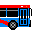

 Real time transit, optimized for commuters.
Coming Fall 2016 to iOS.
Beginning with CityBus in West Lafayette, Indiana, we're building an extensible, event-driven transit platform that combines static and real-time data to understand where your bus (or train, or ferry, or funicular) is and when it'll be near you.
Internally, and historically, Transious is called Proper Shark. Follow the development of our little platform on GitHub.